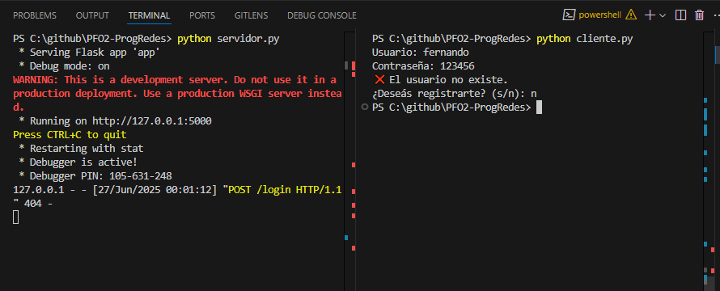
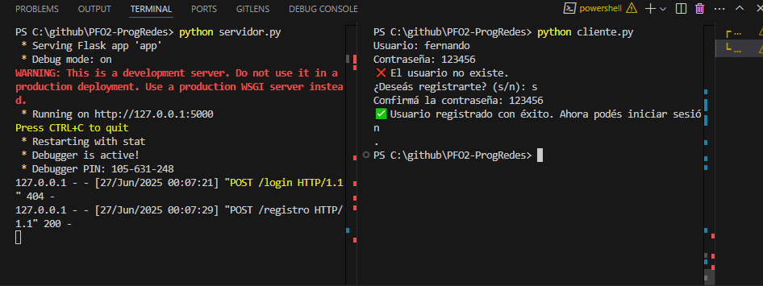
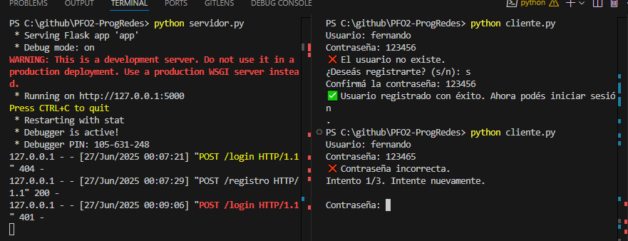
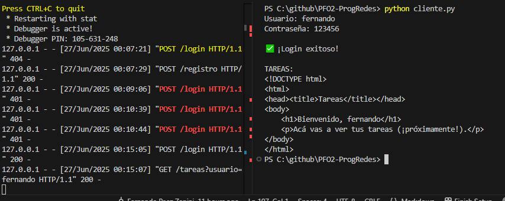
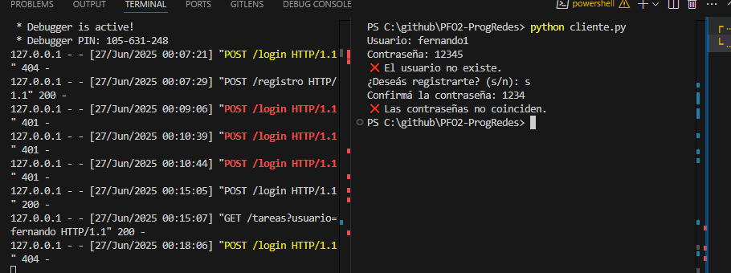
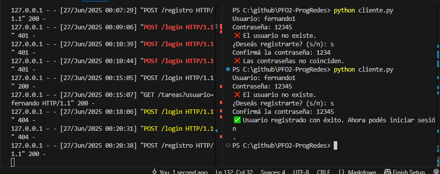

Este proyecto implementa una API REST básica con Flask para registrar usuarios, iniciar sesión y mostrar una vista de tareas protegida. Incluye autenticación básica y almacenamiento de usuarios con contraseñas hasheadas usando SQLite.
POST /registro)POST /login)GET /tareas)POST /login)
POST /registro)GET /tareas)
Este proyecto implementa una aplicación de consola en Python que se
comunica con un servidor Flask (API REST). Por su naturaleza, no puede
desplegarse en GitHub Pages, ya que esta plataforma solo permite publicar
contenido estático (HTML, CSS, JS), y no ejecuta código del lado del
servidor ni scripts de consola como
cliente.py.
Por eso, la sección de GitHub Pages del repositorio fue utilizada exclusivamente para alojar una documentación visual del proyecto, incluyendo capturas de pantalla, flujos de uso y explicaciones de endpoints.
Como alternativa real de despliegue para probar el servidor Flask, se
podría utilizar una plataforma como
Render (https://render.com), que sí permite publicar
aplicaciones Python con backend web. Allí podría alojarse
servidor.py y permitir que cliente.py interactúe
remotamente.
/app)
/tareas (usuario logueado)
bash git clone https://github.com/paezzanini/PFO2-ProgRedes cd
PFO2-ProgRedes
bash python -m venv env env\Scripts\activate
bash pip install -r requirements.txt
bash python servidor.py
bash python cliente.py

Usuario: fernando Contraseña: 123456
❌ El usuario no existe. ¿Deseás registrarte? (s/n): n

Usuario: fernando Contraseña: 123456
❌ El usuario no existe. ¿Deseás
registrarte? (s/n): s
Confirmá la contraseña: 123456
✅ Usuario registrado con éxito. Ahora podés iniciar sesión
Se ejecuta nuevamente el cliente y ya permite loguearse con los datos de registro ```

Usuario: fernando
Contraseña: 123465
❌ Contraseña incorrecta.
Intento 1/3. Intente nuevamente.
Contraseña: 1234
❌ Contraseña incorrecta.
Intento 2/3. Intente nuevamente.
Contraseña: 143
❌ Contraseña incorrecta.
❌ Demasiados intentos fallidos. Cerrando.

Usuario: fernando
Contraseña: 123456
✅ ¡Login exitoso!
TAREAS:
<!DOCTYPE html>
<html>
<head>
<title>Tareas</title>
</head>
<body>
<h1>Bienvenido, fernando</h1>
<p>Acá vas a ver tus tareas (¡próximamente!).</p>
</body>
</html>

Usuario: fernando1
Contraseña: 12345
❌ El usuario no existe.
¿Deseás registrarte? (s/n): s
Confirmá la contraseña: 1234
❌ Las contraseñas no coinciden.

Usuario: fernando1
Contraseña: 12345
❌ El usuario no existe.
¿Deseás registrarte? (s/n): s
Confirmá la contraseña: 12345
✅ Usuario registrado con éxito. Ahora podés iniciar sesión
Hashear contraseñas significa aplicar una función matemática que transforma la contraseña original en una cadena irreconocible. Es un proceso que no se puede revertir fácilmente, por eso se dice que es unidireccional.
Esto se hace para no guardar contraseñas en texto plano (es decir, tal como las escribe el usuario). Si alguien llegara a robar la base de datos, no podría ver directamente las contraseñas reales, porque solo tendría los valores ya hasheados.
Además, muchas veces se le agrega una “sal” (un valor aleatorio) antes de aplicar el hash, para hacer más difícil que alguien use ataques automáticos para adivinar las contraseñas.
En resumen, hashear sirve para proteger los datos de los usuarios y evitar que, si alguien accede a la base, pueda ver las contraseñas reales.
SQLite es una base de datos liviana que no necesita instalar un servidor aparte ni configuraciones complicadas. Todo se guarda en un solo archivo .db, lo que la hace muy práctica para proyectos chicos o medianos como este.
Una de las ventajas más grandes es que es fácil de usar y muy rápida para desarrollos locales o aplicaciones que no van a tener miles de usuarios al mismo tiempo.
También es ideal para practicar o hacer trabajos prácticos, porque no depende de conexiones externas ni servicios adicionales. Basta con importar la librería en Python y ya se puede empezar a guardar datos.
En resumen, SQLite es simple, funciona bien para este tipo de proyectos educativos o personales, y permite centrarse en la lógica del programa sin preocuparse por configurar un sistema de base de datos más complejo.